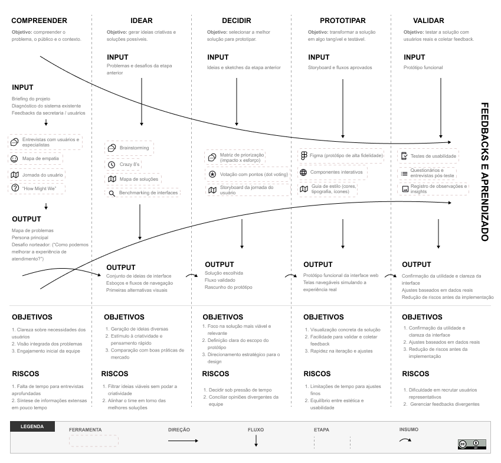

Gostou desse material?
Tenha acesso ao Framework desenvolvido como produto dessa pesquisa sobre Aplicação do Método Design Sprint para o Desenvolvimento de Interfaces Web Ágeis.

Mapear
1Esboçar
2Decidir
3Prototipar
4Testar
5O Design Sprint é uma metodologia comprovada para resolver problemas por meio de design, prototipagem e teste de ideias com os usuários. Os Design Sprints alinham rapidamente as equipes sob uma visão compartilhada com metas e entregas claramente definidas. Em última análise, é uma ferramenta para desenvolver uma hipótese, prototipar uma ideia e testá-la rapidamente com o mínimo de investimento possível em um ambiente o mais real possível.
Para quem está começando, o livro “Sprint”, escrito por Jake Knapp e John Zeratsky (Google Ventures), é uma excelente referência. Ele apresenta uma versão otimizada do processo para startups, com checklists simples e práticas para conduzir um Sprint em apenas cinco dias.
Tenha acesso ao Framework desenvolvido como produto dessa pesquisa sobre Aplicação do Método Design Sprint para o Desenvolvimento de Interfaces Web Ágeis.